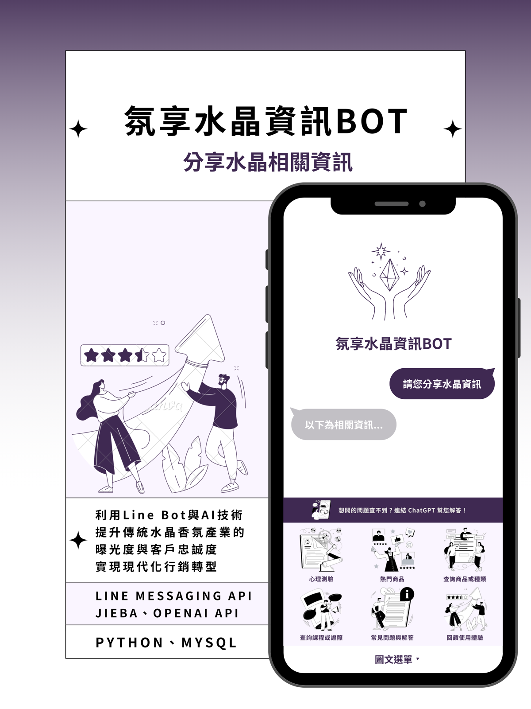

國科會大專生研究計畫：聊天機器人在傳統產業行銷之應用－以 LineBot 為例


國科會大專生研究計畫 NSTC 112-2813-C-030-015-H
聊天機器人在傳統產業行銷之應用－以 LineBot 為例

本計畫為國家科學及技術委員會補助之大專生研究計畫，致力於將聊天機器人應用於傳統產業的網路行銷，以水晶香氛市場為例。團隊在 Line 通訊軟體上開發聊天機器人「氛享水晶資訊 BOT」，以圖文選單呈現功能，提供商品與課程資訊查詢、常見問題解答與個性化推播服務，並結合 OpenAI GPT-4 模型提供個性化回應，完善使用者在傳統產業中的購買體驗，提高消費者購買意願。
傳統水晶香氛產業依賴品牌口碑與線下銷售，但隨著數位時代來臨與通訊軟體普及，消費者對即時、互動式資訊的需求日益增加。團隊透過問卷調查（共回收 200 份有效問卷）了解目標客群需求，並針對三舍草本、希奧水晶、蘭果樹、Jo Malone、10/10 等市面上競品的聊天機器人進行分析，借鏡其即時回覆、常見問題、圖文選單與卡片式回覆等設計。透過聊天機器人技術，企業能提供全天候資訊服務並以數據化方式精準捕捉消費者需求，進而提升品牌忠誠度與市場競爭力。
技術架構：以 Python 串接 LINE Messaging API 與 Webhook 進行系統建置，部署於 Heroku 雲端平台，搭配 MySQL 資料庫記錄使用者行為，並可透過 Jieba 分詞進行語意分析，提升回應準確度。
問卷調查共回收 200 份有效回覆，其中 125 位曾使用過聊天機器人的受訪者中，非功能性需求以「清楚顯示提供的服務選項」最受重視（加權 511 分），其次為「流暢的使用過程」與「功能齊全」。功能性需求方面，27% 的受訪者期望查看商品資訊，20% 期望常見問題與解答，16.5% 期望查看熱門商品。本專案依據調查結果設計功能，藉由客製化、數據化推播及智能回覆，在市場中脫穎而出。
氛享水晶資訊 BOT 具有 24 小時即時互動的特點，提升消費者取得購物資訊的便利度與互動體驗，增強品牌形象；透過分析聊天機器人的對話紀錄，可發現潛在的消費趨勢與需求變化，協助企業制定更精準的行銷策略。未來期望連結使用者帳號系統，協助使用者更快完成購買流程，並依偏好推播相關商品資訊。
雖然本研究聚焦於水晶香氛產業，但研究成果同樣可應用於醫療院所、美容美髮及餐飲業等其他傳統產業，拓展行銷手段並提升與客戶之間的互動體驗，甚至促進產業的數位轉型，帶來更可持續發展的機會。